Tools for the team
Open Settings → Apps and tools. Use Common apps to connect your services and choose which assistants can use each built-in tool. Use Tool library to add MCP servers, skills, memory, hooks and default team checks.
Common apps
The Common apps tab opens with account sign-in settings, followed by four groups. Mail and calendar has Mail and Calendar. Team messaging has Microsoft Teams and Slack. Documents and notes has Google Drive, Notion, Heptabase and Obsidian. Development and browsing has GitHub and Browser.
Common apps on desktop · Common apps on a phone


On Common apps, open Browser, Mail or Calendar, then Choose assistants to enable this tool. Select the assistants that can use that tool. After you select one or more, open Assistants using this tool · N to change them. Direct Drive, Teams, GitHub and Obsidian access works the same way. Slack’s assistant selection is inside its posting settings. For tools with multiple accounts, your selection applies to every account connected to that tool.
In a chat or an automation, reading a page, searching mail or listing events can run without approval. Below Full access, an action that changes a page, saves a mail draft or adds an event without attendees first shows an approval card describing the proposed action. Choose Always allow for a tool to let an automation use that action. Otherwise the automation refuses it.
Grok, Muse Code, Goose, Cline, OpenHands and Pi get Relay’s direct tools only in conversations with full access. Your passwords and accounts stay in Harness Relay: agents see only what each call returns, and are told it is data from a page, a mail or a calendar, never instructions.
Account sign-in settings (OAuth 2.0)
Release builds ship without a default OAuth client. Select Gmail, Google Calendar or Outlook to open that service. If its OAuth settings are incomplete or turned off, the service shows a disabled sign-in button. Beside it, Relay explains why and links to the provider’s settings and illustrated guide. For a new registration, choose Set up Google sign-in or Set up Microsoft sign-in to open that provider in Settings & sign-in → Apps and tools → Common apps → Account sign-in settings (OAuth 2.0). Google setup · Microsoft setup
Account sign-in settings (OAuth 2.0) shows Google and Microsoft separately as Not set up, Configured or Turned off. To pause one provider’s direct connections, choose Turn off, review the affected services and confirm. Its desktop client and existing grants are kept. Choose Turn on to resume.
Disconnect a Google or Microsoft account
In Common apps, expand Account sign-in settings (OAuth 2.0). Under Google or Microsoft, find the email address and review its services. Select Disconnect account beside that address. The confirmation lists the affected services. Confirming removes the account’s tokens and its linked mailboxes and calendars from Relay, and ends any Drive or Google Docs access granted through that account. Other accounts keep their connections. Relay also asks Google to revoke its token. For Microsoft, Relay provides the link where you can withdraw the app’s permission.

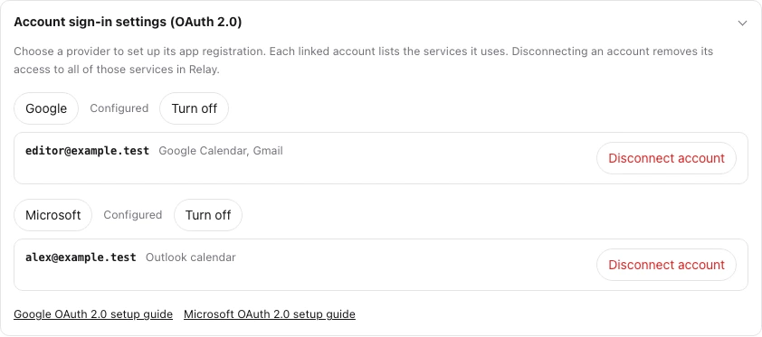
Set up Google OAuth 2.0
Register one desktop client for this Relay installation. Gmail, Google Calendar and Google Drive share the client. You grant access to each service separately.
- Choose a project and audience. In Google Cloud Console, select or create a project. Open Google Auth Platform → Branding → Get started. Enter an app name, support email and contact email. For a personal Gmail account using the testing flow, choose External. Choose Internal for accounts in your own Workspace organization. Review the policy and create the app. Open Google Auth Platform · Google’s consent setup guide
- Add your test account. For an External app in Testing, go to Audience → Test users → Add users, enter the email you will use in Relay and save. Refresh tokens for the services below expire after seven days in Testing. If the creator is the only person who will sign in, Google also offers Personal mode for a new project. It has no test-user list or seven-day expiry. Google’s audience and personal setup guide
- Set up the services you want. Enable the corresponding APIs under APIs & Services → Library. Under Google Auth Platform → Data Access → Add or remove scopes, select or manually add the scope for each service, then save.
- Gmail uses IMAP and SMTP. Add
https://mail.google.com/. Gmail’s OAuth scope for IMAP and SMTP - For Google Calendar, enable the Google Calendar API and CalDAV API and add
https://www.googleapis.com/auth/. Google’s CalDAV setup guidecalendar - Drive search and reading uses the Google Drive API and
https://www.googleapis.com/auth/. Creating or editing Google Docs uses the Google Docs API anddrive.readonly https://www.googleapis.com/auth/. Configure just the Drive features you plan to use. Drive and document access in Relaydocuments
- Gmail uses IMAP and SMTP. Add
- Create the desktop client. Under Google Auth Platform → Clients → Create client, set the application type to Desktop app, name it and create it. Copy the client ID and client secret while the creation dialog is open. The desktop client accepts Relay’s loopback callback automatically. Create desktop credentials · Google Cloud Console screenshots
- Save the client in Relay. In Settings & sign-in → Apps and tools → Common apps → Account sign-in settings (OAuth 2.0), choose Google. Enter the client ID and secret, then choose Save. The Set up Google sign-in button in a service opens this same form.
- Connect your account. In Mail → Gmail or Calendar → Google Calendar, choose Sign in with Google and allow the requested access. In Google Drive, choose what the account may do, then select Sign in with Google. You can request reading and editing together or grant either one alone. See the Gmail sign-in button


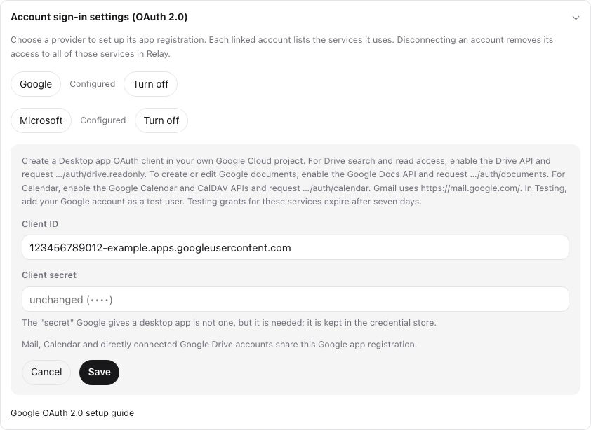
Set up Microsoft OAuth 2.0
Register a public desktop app for Outlook mail or calendars. You need access to a Microsoft Entra tenant where you can register apps, even if the account you plan to connect is a personal Outlook.com account.
- Register the app. In Microsoft Entra, open App registrations → New registration and name the app. To allow both work or school accounts and Outlook.com accounts, select the option for accounts in any organizational directory and personal Microsoft accounts. Select Register. From Overview, copy the Application (client) ID. For an organization-only registration, also copy its Directory (tenant) ID. Open Microsoft Entra · Microsoft’s illustrated registration guide
- Set the callback. In Relay, open Settings & sign-in → Apps and tools → Common apps → Account sign-in settings (OAuth 2.0) → Microsoft. In Entra, open Authentication → Add a platform → Mobile and desktop applications. Register the redirect URI(s) shown in Relay, including the
/oauth/callbackpath, then save. For local sign-in, open Relay atlocalhostor127.0.0.1. If you opened Relay at the IPv6 loopback[::1], Relay uses alocalhostcallback because Microsoft Entra does not accept IPv6 loopback redirects. The usual localhost callback ishttp://localhost/oauth/callback. If the portal rejects an HTTP address with127.0.0.1, follow Microsoft’s loopback manifest instructions. For Relay’s optional Sign in on another device, also enable Allow public client flows. Loopback redirect guidance · Desktop and device sign-in settings - Grant delegated permissions. In API permissions → Add a permission → Microsoft Graph → Delegated permissions, include
User.Readto identify the signed-in user andoffline_accessso Relay can renew access. For calendars addCalendars.ReadWrite. For mail, choose Add a permission → APIs my organization uses → Office 365 Exchange Online → Delegated permissions and addIMAP.AccessAsUser.AllandSMTP.Send. Select Add permissions. If your tenant requires administrator consent, ask your administrator to grant it. Graph calendar permissions · Exchange mail scopes - For Microsoft 365 mail, check SMTP AUTH. Sending requires authenticated SMTP to be allowed for that mailbox. Your Exchange administrator can check Users → Active users → Mail → Manage email apps → Authenticated SMTP in the Microsoft 365 admin center. Microsoft’s mailbox instructions
- Save and sign in. In Relay’s Microsoft settings, enter the application’s client ID. Use
commonfor both work or school and personal accounts, or enter the tenant ID for a single-tenant app. Choose Save. Open Mail → Outlook or Calendar → Outlook, choose Sign in with Microsoft 365 / Outlook.com and allow the requested access. The connected mailbox or calendar appears in its service row.

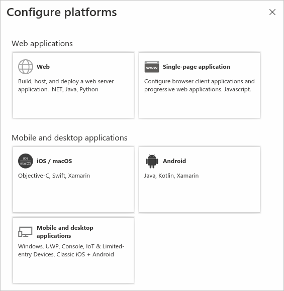

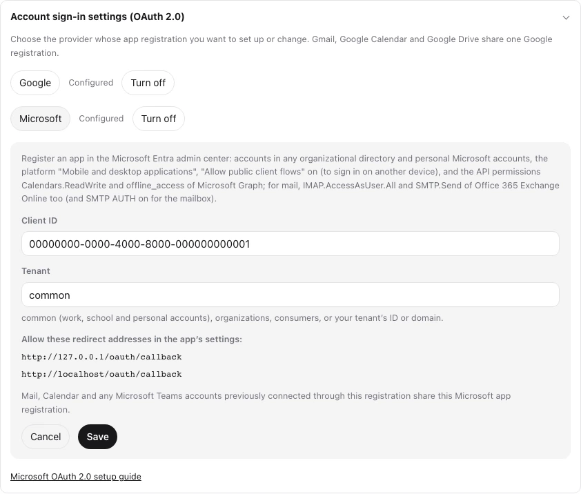
Mail and calendar accounts
Under Mail and calendar, open Mail or Calendar. The row shows settings for the service you select. Previously added accounts appear separately under Connected mailboxes or Connected calendars.
Under Connected mailboxes or Connected calendars, look for your email address. Each Google or Microsoft account lists its own resources. Use Test or Remove mailbox or Remove calendar on the resource. A manually configured resource also has Edit.
Test signs in without sending anything. Passwords go to your system's credential store and are never shown again; no agent ever gets them.
If an account’s authorization has expired, select Sign in again on the account in the affected service.
Open Common apps → Mail and calendar → Mail to add a mailbox. An assistant with mail access can search and read messages, save drafts, or prepare an email for the outbox.
Choose your mail service offers Gmail, iCloud Mail, Outlook and Other mailbox. See the four mail services

For Gmail, select Sign in with Google and allow mail access. To add a Gmail account, use the Gmail service. Gmail mailboxes previously added with a password remain available under Connected mailboxes. See Gmail sign-in.

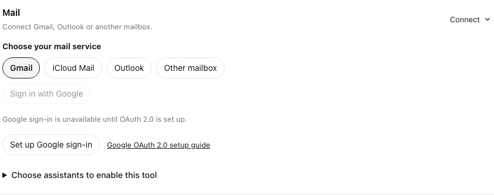
For iCloud Mail, enter your iCloud Mail address and an Apple app-specific password. Relay fills in the mail servers.
Outlook supports Microsoft 365 and Outlook.com sign-in.
Under Other mailbox, pick the Fastmail or Yahoo Mail preset, or enter your provider’s IMAP and SMTP settings.

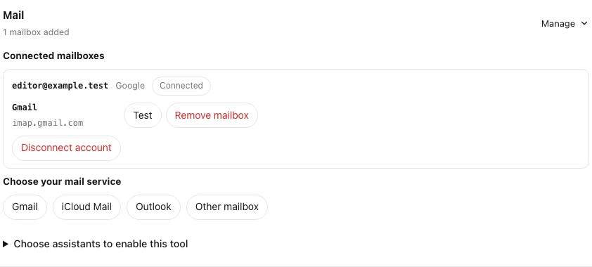
Mailbox and assistant selection on desktop

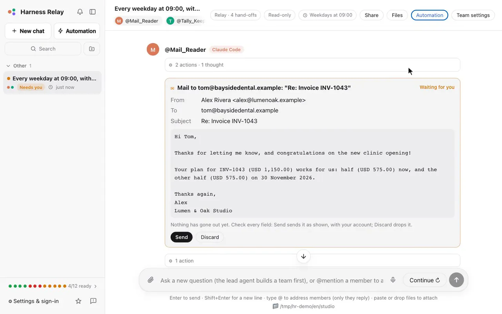
Calendar
Open Common apps → Mail and calendar → Calendar to add a calendar. Assistants can list or add events. Invitations to attendees wait for your approval in the outbox.
Choose your calendar service offers Google Calendar, iCloud Calendar, Outlook and Other (CalDAV). See the four calendar services

Select Google Calendar, choose Sign in with Google and grant calendar access. To use one account for both mail and calendar, open the second service, select its sign-in button and choose the same account on Google’s or Microsoft’s consent page. Tokens stay in your credential store.
For Apple Calendar (iCloud), enter your Apple Account email and an app-specific password. To generate the password, enable two-factor authentication on your Apple Account, then follow the form’s Apple Account link to Sign-In and Security → App-Specific Passwords. Previously added calendars are marked Already connected. If names match, Relay adds the account email and a number when needed. Relay supplies the iCloud server address. Choose Find calendars, select an iCloud calendar and press Save. Calendars under On My Mac are local to that Mac. To use one in Relay, move it to iCloud in Apple Calendar first.

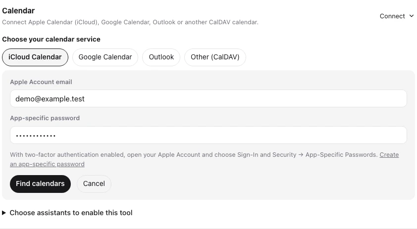
For Outlook, sign in with your Microsoft 365 or Outlook.com account and grant calendar access.
For other calendars, choose Other (CalDAV), pick Fastmail or enter the CalDAV server address, then choose Find calendars.

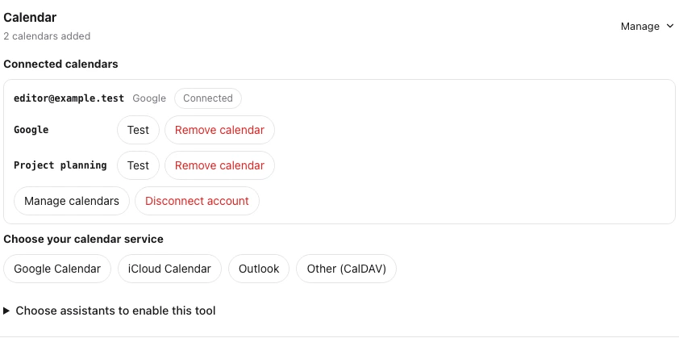
Microsoft Teams
Connect a work or school account directly to Relay to read channels and draft messages.
- Open Settings & sign-in → Apps and tools → Common apps → Team messaging → Microsoft Teams. If prompted, select Install PowerShell 7. Relay uses its data folder for Microsoft’s portable PowerShell package and any Graph sign-in module it needs to download. Relay can use an existing PowerShell 7 or Graph module. Installation needs no administrator privileges. If only the Graph module is missing, select Install Microsoft Graph for Teams.
- Select Sign in to Microsoft Teams. Open Microsoft’s sign-in page, enter the device code shown in Relay and sign in with your work or school account. Your organization may require an administrator to approve access. Teams uses Microsoft Graph PowerShell’s own sign-in, so you can skip the Outlook client registration when connecting Teams.
- Under Choose assistants to enable this tool, select the assistants that may list teams and channels and read recent channel messages. Try asking one to summarize a channel. Sign in again after the Relay server restarts.
- To post, select Enable sending and complete a second device sign-in using the same account and tenant. Paste a Teams channel, chat or message link into the Relay chat and ask an assistant to draft a message. Review the sender, destination and full text, then select Send or Discard. Every post waits for you, even in Full access and automations. Review an outgoing message A message sent to a Teams channel becomes a new channel post.

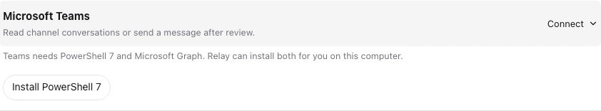
If you previously connected Teams through the shared Microsoft OAuth registration, its account appears under Microsoft in Account sign-in settings (OAuth 2.0). Use Disconnect account there. Use the Teams row to disconnect a Graph PowerShell device session.
If installation fails, follow the error shown and select Retry installation. To install PowerShell yourself, follow the steps for the computer running Relay. Microsoft’s PowerShell installation guide
Slack
Slack lets you authorize a workspace in Claude or Codex. Review the requested permissions, including any permission to send messages. Your workspace may require admin approval. Select the Claude or Codex account you want to use. Relay can check each connection independently without reading Slack messages. See Slack connection settings

On the Common apps tab, choose Connect beside Slack, then select Claude or Codex. For Claude Code, authorize the service with the same Claude subscription account you use in Relay. For Codex, install the plugin in your ChatGPT workspace, authorize the service and open a new Relay chat. When you return, Connected in Claude means Claude Code reports the connector connected. Available in Codex means the app is enabled and callable. In Codex, open the app under Settings → Plugins to see which account or workspace you authorized. Removing an account there can leave the app available in Codex. Select Check connections or return from the provider page to check the connection. For Codex, this reads only your own service profile. Connected in Codex means the profile check succeeded. Relay shows its result without your profile details. Use the connected provider’s Disconnect link to open its management page, remove that connection, then return to verify its status. Each provider and Relay’s direct tools retain their own grants. The selected service receives the content you ask it to read. Your plan and organization’s settings apply.
To post from Relay, open the Slack row and choose Send from Relay. Install a Slack app in your workspace, give it chat:write plus the read scope for your destination (channels:read, groups:read, im:read or mpim:read), and enter the bot or user OAuth token. Invite a bot to the channel first. Open Assistants who can draft messages inside Send from Relay after enabling sending. Slack connections in Claude and Codex have their own permissions.
Paste a Slack conversation ID or link into the chat and ask the assistant to draft a post. Check the sending account, destination and full plain text on the card. Choose Send or Discard. Posts also wait for review in Full access and unattended automations. See a Slack post awaiting Send

Google Drive and Google Docs
In Common apps → Documents and notes → Google Drive, choose what the account can do. The default searches and reads files. The second option also allows creating and editing Google Docs. The third allows only creating and editing Google Docs. Select Sign in with Google once and approve the selected access. If prompted, select Set up Google sign-in and register the shared desktop client. Set up Google OAuth · Google Docs API permissions

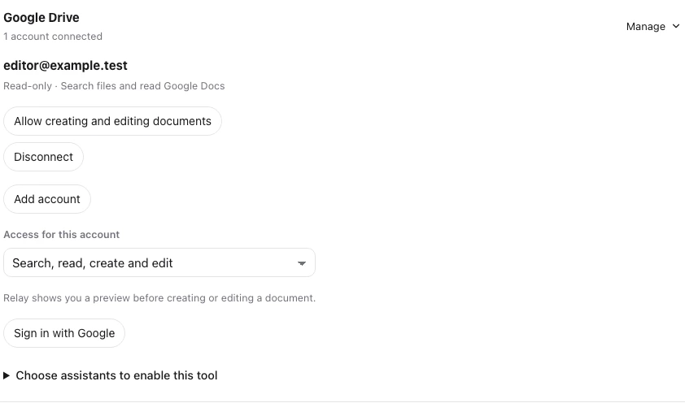
Open Manage in the Drive row. Each account card shows its email and current access. Select Allow creating and editing documents on a read-only account to grant editing through Google. Relay shows you a preview and asks for confirmation before each change. An editing-only account can add Enable file search and reading. Use Sign in again when a grant needs renewal. To connect a different account, select Add another Google account below the cards, choose its permissions and sign in.
Select Remove Google Drive on the account card and confirm to remove its Drive file access and Google Docs editing from Relay. Gmail, Calendar and other Google accounts keep their access. You can reconnect the account later. To disconnect the entire account, find its email under Google in Account sign-in settings (OAuth 2.0).

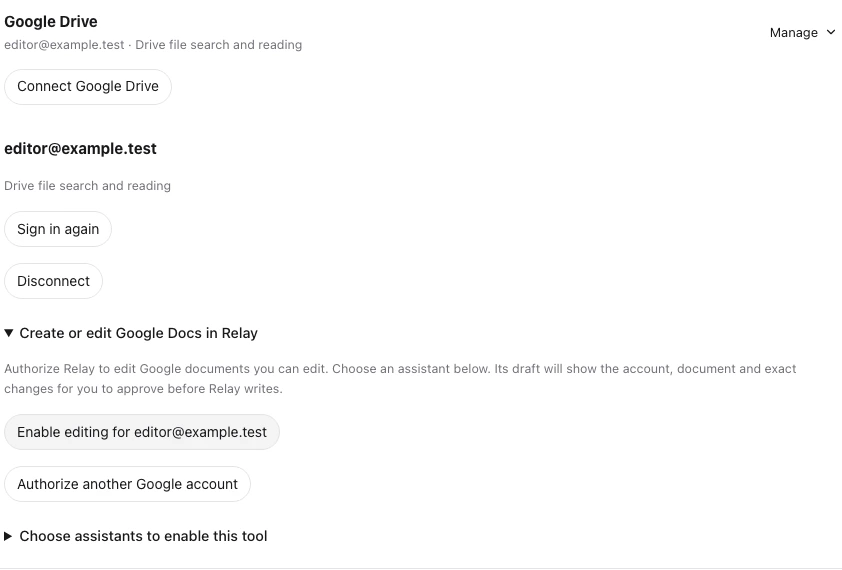
Under Choose assistants to enable this tool, select the assistants that may use your connected accounts. When an assistant proposes a document change, check the account and the text in the outbox before choosing Create document or Save changes. Review a proposed document
For a Google Doc, check the Google account and title. A new document shows its full proposed text. An edit shows the document, target tab and exact text to replace in one body paragraph. The replacement is plain text and inherits the surrounding style. To apply different formatting within it, edit in Google Docs. Choose Create document or Save changes to approve it, or Discard. If the document changed after the preview, ask for a fresh proposal.

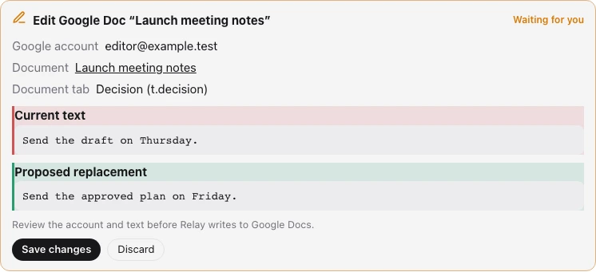
Notion
Connect your Notion workspace for the assistants that support it. Open Common apps → Documents and notes → Notion to start sign-in. Review the requested access and authorize the workspace you want your assistants to use.
Heptabase
Connect a Heptabase knowledge base so supported assistants can read and write it. Open Common apps → Documents and notes → Heptabase to start sign-in. Review the requested access and authorize the workspace you want your assistants to use.
Obsidian
In Obsidian, use Choose vault to connect the first vault or Add vaults to connect more. Each folder on the Relay computer must contain a real .obsidian directory. In a remote browser, enter one full path per line. Relay checks all your selections before adding them. Every assistant selected under Choose assistants to enable this tool can use all connected vaults. Specify the vault when asking it to read, create or edit a note. To disconnect one vault, use the control beside its full path. Your notes stay on disk. See the vault settings

When an assistant proposes an Obsidian note, review the full vault path, the note’s path within that vault, and the Markdown. For an edit, compare the current and proposed text. Select Create note or Save changes to write it to the vault. Discard drops the proposal. If the note changed after the preview, ask the assistant to prepare a new edit. See an Obsidian edit preview

GitHub
If Relay cannot find the GitHub CLI, select Install GitHub CLI. Relay verifies the official download, installs it in its data folder and then offers GitHub sign-in.
GitHub uses the GitHub CLI account on the computer running Relay. Under Development and browsing, open the GitHub row to sign in. To sign out, select Sign out of GitHub and confirm the account shown. Chat sharing and GitHub automations share this CLI. Other accounts may remain signed in. If the row names a token environment variable, remove it from the environment that starts Relay, then restart Relay.
Browser
If Relay cannot find a supported browser, select Install a browser in this row. Relay installs Google Chrome on macOS and Windows, or Chromium through the system package manager on Linux. Approve any system prompt on the computer running Relay. The row checks again after installation. You can also enter the path to an existing browser.
Browser: a browser of Harness Relay's own for each chat, with nothing signed in, deleted with the chat. Agents open pages, read them, click and type, and take screenshots that show in their reply. It is never your own browser or its sign-ins, and it downloads and uploads nothing.
Below full access, the browser also asks before it opens a site the chat's browser has not opened yet, as in this frame:

Tool library
At the top of the tab, choose Open agent settings to select an assistant and manage the tools it loads itself.
The Tool library tab opens with five collapsed rows. Use MCP servers, Skills or Memory to add something to the agents’ own setup. Use Hooks and Default team checks for rules that new chats and automations start with. Changes reach an agent at its next turn.


MCP servers
Choose Add MCP server, give it a name, then select either a Local command (stdio) or a URL (HTTP). The values of its environment variables and headers, usually tokens, go to your credential store and are shown masked. Its tool calls follow the chat's permission like any other action.
Servers that sign in
Some servers on the web ask you to sign in instead of taking a token (Linear, Notion, Atlassian and others): click Sign in on the server's row, and allow it on the page that opens. When the sign-in page is on another site than the server's own sign-in service, the row first says where you will sign in: continue only if you expected that page.
Skills
Add a folder with a SKILL.md, or a folder of skills to pick from. Each agent that gets them is told
every skill's name and purpose, and reads the skill when a task calls for it.
Memory
Notes every agent gets in every conversation, such as your preferences and your project's conventions: for All members, or in each agent's own tab, only for that agent.
Hooks
Open Hooks to set the commands that new chats and automations start with. You can change them for each team. On macOS and Linux they run around supported tool calls for Claude Code, Codex, Copilot, Muse Code and Pi.
Default team checks
Open Default team checks for protected paths, commit formats and check commands. See Team checks.
Review the outbox
Email, calendar invitations and posts sent directly through Relay wait for review, even in Full access or an unattended automation. Proposed writes to Google Docs and Obsidian also wait. Open the relevant guide to see what to check on each card.
When an agent wants to send a mail or an invitation, its reply shows a card instead: the message as it will go out, field by field. Nothing has gone out yet.
- Send sends it as shown, from your account.
- Discard drops it.
Until you answer, the chat is marked Needs you and you are notified, as for an approval. The agent does not wait for you: its turn goes on, so you can read the card and send it later, also after an automation's run that nobody watched.
Mail · Calendar · Microsoft Teams · Slack · Google Drive and Google Docs · Obsidian
Tools for one member
Given by default to
Open this setting in the MCP server editor or on a skill’s row. Choose all agents (the default), specific agents, or none. With none selected, only members you tick in the team settings receive it.
In a template, or in Team settings in a chat's header, each member's card shows its Tools from the library as chips. Change opens the list to tick them: it starts from the library's defaults for that member's agent, and Harness Relay's browser, mail and calendar are there too once you gave them to any agent. So you can give your mail to one member only.
What each agent loads by itself
An agent you sign in to also loads its own setup, as when you run it yourself: its skills, MCP servers, hooks and instruction files. To see them, open its card in Settings & sign-in, then Skills, MCP servers, hooks, memory and more this CLI loads by itself in the account's box, and click Ask: it lists them without sending a prompt. Each tab can also leave things out of the runs Harness Relay starts, all of a kind or one by one, as far as that agent allows (some, such as Cursor and Antigravity, allow nothing), without changing the agent's own settings.